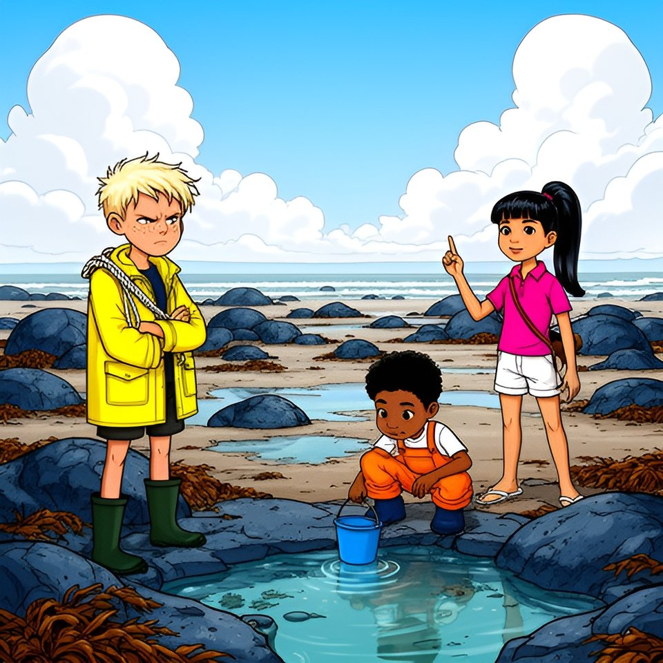

Titistoire › Les Galaxies (8-10 ans)
La moitié de rien
Le Trésor coupé en deux, épisode 1 sur 8 : un feuilleton à énigmes sur l'île de Lodenn.

▶ Écouter et regarder l'histoire
Gratuit, sans inscription : la voix lit, le texte suit mot à mot, les images tournent comme dans un album.
Le texte de l'histoire
Sur l'île de Lodenn, tout le monde savait où était le trésor du capitaine. C'était bien pour cela que personne ne l'avait jamais trouvé. Mais ce matin-là, Tino ne pensait pas au trésor. Il comptait. « Deux cent quatre-vingt-dix-huit, deux cent quatre-vingt-dix-neuf… trois cents ! »
Trois cents pas de la cale au bout du Môle, comme hier. Le Môle, c'était la longue jetée de granit qui fermait le port, et Tino la mesurait chaque matin, au cas où elle aurait rétréci dans la nuit.
Devant lui, vingt estivants se tenaient en rang d'oignons, un doigt dans l'oreille : à Lodenn, le réseau s'arrêtait là. Les îliens appelaient ce rang « le standard ». Partout ailleurs, un téléphone ne servait qu'à faire de la lumière, et personne n'en emportait.
Sur le dernier banc, deux tongs vertes dépassaient d'un poncho violet. Un Tong ! Sur le banc que les Bottes, les enfants de l'île, disputaient depuis trois étés aux Tongs, les enfants de l'été. « Ce banc est pris, prévint Tino. — Tadam, bâilla le Tong, les yeux fermés. C'est moi qui l'ai pris. » Il s'appelait Oscar.
La navette de dix heures, le Va-et-Vient, doubla le bout du Môle. À la barre, Gwenola, la maman de Maël, lança comme à chaque entrée : « Le clocher par la Croix, et on est chez nous ! » Sur le pont se tenait une grande fille très droite, en polo rose, un tube de cuir dans le dos.
Elle regardait l'île — un long poisson de granit qui nageait vers l'ouest, le phare sur le nez, la chapelle à la place de l'œil, le bourg sous le ventre — du regard qu'on a pour quelqu'un qui doit de l'argent depuis longtemps.
Derrière la navette entra un bateau gris, hérissé d'antennes, que personne n'attendait. Il s'arrêta au beau milieu du port, et une chaîne dégringola dans l'eau. « On mouille ! cria Gwenola dans un grand rire. Au milieu, tant qu'à faire ! »
Oscar ouvrit un œil. « On mouille quoi ? — L'ancre. Mouiller, c'est jeter l'ancre. C'est pas moi qui le dis, c'est Gwenola. — Et pour la sécher, ils font comment ? » Tino ouvrit la bouche, puis la referma. En neuf ans, il ne s'était jamais posé la question.
À midi, les trois Bottes se retrouvèrent à la cale, cette rampe de pierre où l'on tire les bateaux. Le vieux Job, qui la gardait, écrivait sur son ardoise. Basse mer : treize heures cinquante. Coefficient : quatre-vingt-dix-huit.
Maël, le chef, n'avait pas besoin de l'ardoise. Le coefficient, ce nombre qui annonce jusqu'où la mer s'en ira, il le savait en se levant. « Avis de grande marée, déclara-t-il. À soixante-dix, elle lâche le Sillon. À quatre-vingt-dix, les Chanteuses. Mer belle. On y va. »
« Une maline, disaient les anciens, approuva Job. Et dans quinze jours : cent seize. » Sous l'ardoise, un tableau portait trois rangs de clous : à terre, à la grève, au large. Maël y décrocha son flotteur jaune, Enora le vert, Tino l'orange, et tous trois passèrent au rang de la grève.
« Les Chanteuses, annonça Maël. — Derrière la mer, jamais devant, bougonna Job. Et à la cloche ? — Demi-tour ! » répondirent trois voix. C'étaient les lois de la grève, ce fond de mer que la marée découvre. Les enfants de Lodenn les savaient avant de savoir lire.
Au rang du large pendait un seul flotteur, vieux et gris. « Il est à qui ? demanda Tino, pour la quarante et unième fois. — Hein ? fit Job. — La vérité vraie, glissa Enora, c'est qu'il est à un contrebandier parti chercher du sucre en mille neuf cent douze. Il rentre mardi. »
Avec la moitié de l'île, ils descendirent derrière la mer. Elle avait déjà rendu le Sillon, cette levée de galets qu'elle donne et reprend deux fois par jour, et elle reculait encore, laissant des mares, du goémon et des chemins qui n'existaient pas le matin.
« Le Corps de garde », récita Tino, le doigt tendu vers une maison minuscule, tout au bout du Sillon, sur l'îlot de la Miette. « Ni lit ni feu, pour que le guetteur ne s'endorme pas. Même le toit est en caillou. C'est pas moi qui le dis, c'est Job. — On sait, Tino », soupira Enora.
Tout en bas de la grève attendaient les Chanteuses : quarante gros rochers ronds, bleus et luisants comme un troupeau de phoques endormis. Et là, les pieds dans la meilleure mare à crevettes de Lodenn, trois Tongs. Oscar. Une fille en gilet bleu. Et, devant eux, la fille de la navette.
Quand l'ennemi écoutait, les Bottes s'appelaient à l'envers. « Onit, au rapport, murmura Maël. — Reçu, Leam. Débarquée depuis moins de trois heures, et elle commande déjà. » Pour les déloger, Tino frappa d'un galet le rocher le plus proche. Il sonna comme une cloche.
Il en frappa un autre, puis un autre. Ding. Dong. Ding. Au lieu de s'enfuir, Oscar tira de son poncho un petit harmonica et souffla une note. « Celui-là fait un la », constata-t-il, enchanté. Tino en resta le galet en l'air. Personne ne lui avait jamais répondu en musique.
« Les Chanteuses, lâcha Maël. Il faut quatre-vingt-dix pour les voir. » Puis il croisa les bras. « Avis de grand frais sur la mare aux crevettes. » La grande fille leva un doigt. Elle s'appelait Victoire. « Je propose un marché, messieurs-dames les Bottes. »
« Clause un : vous gardez les crabes. Clause deux : nous gardons la mare. — Négatif. — Objection. » Au mot crabes, Tino s'était accroupi au bord de l'eau, le seau serré contre lui. Au fond de la mare, quelque chose le regardait. Avec des pinces.
Là-haut, sur la cale, la cloche se mit à sonner : la mer était au plus bas. Personne ne bougea. Puis tout le monde. Bottes et Tongs remontèrent côte à côte, sans se regarder. Égalité, comme depuis trois étés.
Sur la cale, Job regarda trois flotteurs revenir au rang d'à terre. Puis il pointa sa craie vers les Tongs. « Et les vôtres, les hirondelles ? » Il appelait ainsi les gens de l'été. « Pas de flotteur, pas de grève. On descend avec ses parents. Pas cent mètres devant eux. »
Victoire ne baissa pas le menton. « Je propose un marché, monsieur. Je vous présente nos excuses, et vous m'apprenez quand on peut aller aux Jumelles. — Ça dépend de la marée. » Job montra, très loin vers l'est, deux hauts rochers pareils. « Il faut cent dix, et toute l'île avec toi. »
« Toi aussi, tu viens pour le trésor ? reprit-il. Le capitaine est rentré avec un coffre que quatre hommes portaient. Deux cent cinquante ans qu'il l'a annoncé : mon trésor est aux Jumelles. Deux cent cinquante ans qu'on en rapporte des crevettes. » Oscar tira de son harmonica deux notes graves. Awa, la fille au gilet bleu, le fit taire du coude.
Restait le seau à porter jusqu'à la Coque. Enora pointa le doigt, un camarade par morceau, et récita la comptine des Bottes : « Qui me lit seul — mon trésor est — il dort sous la — du chemin qui — venez à deux — c'est toi ! »
Le doigt tomba sur Tino. « Six morceaux, trois Bottes, protesta-t-il. Ça tombe toujours sur le troisième, et le troisième, c'est toujours moi. — Une comptine, ça ne se discute pas », trancha Enora. Aucun des trois ne vit que la grande fille en rose s'était arrêtée net.
Victoire était devenue toute pâle. Sa main chercha, dans son dos, le tube de cuir, et se referma dessus. Tino, lui, souleva le seau, regarda dedans, et le reposa très vite. « Un crabe ! Gros comme une assiette ! »
Maël se pencha. Le crabe était gros comme une pièce de deux euros. « Crabe faible à modéré, annonça-t-il. Sans danger pour la navigation. » Tino porta le seau quand même, à bout de bras. Deux mille quarante pas. Il les compta tous.
La Coque, une vieille barque retournée sur la dune, sous le phare, servait de quartier général aux Bottes. Ce soir-là, avant la soupe, Maël y apporta une boîte à biscuits cabossée et en sortit, en riant, une moitié de vieille carte.
C'était un papier jauni, dont le bord droit était découpé en dents de loup. On y voyait le nez d'un poisson, une chapelle, cinq débuts de phrases et, tout au bord, une petite tache rouge. Du vin, sans doute.
« La moitié de rien, déclara Maël. Ça n'a jamais servi qu'à désigner celui qui porte le seau. — La vérité vraie, assura Enora, c'est que l'autre moitié, mon arrière-grand-père l'a mangée. Avec du beurre salé. »
À l'autre bout de l'île, plage des Dames, les Tongs avaient leur Cabine, la dernière du rang, rayée de blanc et de bleu. Victoire en tira la porte. « Leur comptine, ils la tiennent d'où ? — En fait, de toujours, répondit Awa. Je l'entends depuis six étés. » Alors Victoire ouvrit le tube de cuir.
Elle déroula un parchemin jauni, dont le bord gauche était découpé en dents de loup. On y voyait la queue d'un poisson, deux rochers pareils, cinq fins de phrases et, tout au bord, un crochet rouge terminé par un point : la signature du capitaine, assurait-on chez elle.
Ces cinq lignes, sa famille les récitait aux anniversaires. Victoire les récita : « Me lit de travers. Aux jumelles. Dernière pierre. Marche sur la mer. Le jour de la grande maline. » Oscar réfléchit. « Chez moi, aux anniversaires, on a du gâteau. — Chez moi aussi. Après. »
Cette nuit-là, pour la première fois depuis deux cent cinquante ans, les deux moitiés d'une même feuille dormaient sur la même île. Que disaient-elles, mises bout à bout ? Personne n'avait encore eu l'idée d'essayer.
Et que cherchait l'homme du bateau gris ? Debout sur son pont, il regardait les Jumelles dans sa lunette, depuis une heure. Ce soir-là, la mer revint border Lodenn, comme tous les soirs. Sur l'ardoise de la cale, Job écrivit le chiffre du lendemain : quatre-vingt-seize.
Épisode suivant : Le traité de la crêperie